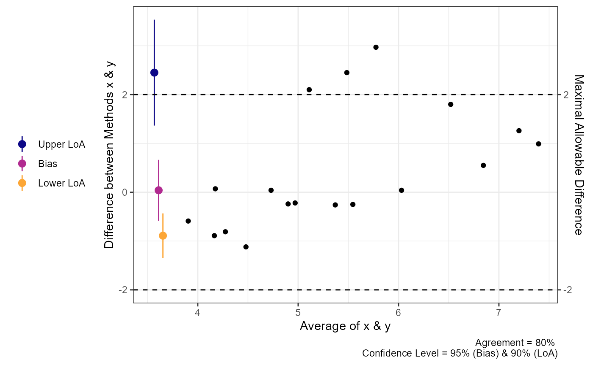

Agreement & Tolerance Limits
Aaron R. Caldwell
Last Updated: 2023-04-13
agreement_analysis.RmdIn this vignette I will briefly demonstrate how
SimplyAgree calculates agreement and tolerance limits. This
vignette assumes the reader has some familiarity with “limits of
agreement” (Bland-Altman limits) and is familiar with the concept of
prediction intervals. Please read the references listed in this vignette
before going further if you are not familiar with these
concepts.
library(SimplyAgree)
data(temps)Agree or Tolerate?
Francq, Berger, and Boachie (2020)
pose this question in a paper published in Statistics in
Medicine. Traditionally, those working in medicine or physiology
have defaulted to calculating some form of “limits of agreement” that
Bland and Altman (1986) once recommended. The
recommendation by Bland and Altman (1986) was only an
approximation, and that has undergone many modifications (Bland
and Altman 1999; Zou
2011) to improve the accuracy of the agreement interval and
their associated confidence intervals. Meanwhile, the field of
industrial statistics has focused on calculating tolerance limits. There
are R packages, such as the tolerance R package available
on CRAN, that are entirely dedicated to calculating tolerance limits. It
is important to note that tolerance is not limited to the normal
distribution and can be applied to other distributions (please see the
tolerance package for more details). However, in agreement studies
typically seen in medicine, tolerance limits may be a more accurate way
of determining whether two measurements adequately close to one
another.
To quote Francq, Berger, and Boachie (2020):
In terms of terminology, tolerance means, in this context, that some difference between the methods is tolerated (the measurements are still comparable in practice). Furthermore, the tolerance interval is exact and therefore more appropriate than the agreement interval.
In this package, tolerance limits refer to the “tolerance” associated with the prediction interval for the difference between 2 measurements. The calculative approach (detailed much further below) involves calculated the prediction interval for the difference between two methods (i.e., an estimate of an interval in which a future observation will fall, with a certain probability, given what has already been observed) and then calculating the confidence in the interval (i.e., tolerance). Therefore, if we want a 95% prediction interval with 95% tolerance limits, we are calculating the interval in which 95% of future observations (prediction) with only a 5% probability (1-tolerance) the “true” prediction interval limits are greater/less than the upper/lower tolerance limits.
Personally, I find tolerance limits more attractive for 2 reasons: 1)
the coverage of the prediction intervals and their tolerance limits is
often better than confidence intervals for agreement limits, and 2) the
interpretation of the tolerance limits is much clearer. For a greater
discussion of this topic, please see the manuscript by Francq, Berger, and Boachie (2020) and
their R package BivRegBLS.
Tolerance
In SimplyAgree we utilize a generalized least square
(GLS) to estimate the tolerance limits. The function uses the
gls function from the nlme R package to build
the model. This allows a very flexible approach for estimating
prediction intervals and tolerance limits.
We can use the tolerance_limits function demonstrate the
basic calculations. In this example (below), we use the
temps data set to measure the differences between
esophageal and rectal temperatures between different times of day
(tod) and controlling for the intra-subject
correlation.
tolerance_limit(
data = temps,
x = "trec_pre", # First measure
y = "teso_pre", # Second measure
id = "id", # Subject ID
condition = "tod", # Identify condition that may affect differences
cor_type = "sym" # Set correlation structure as Compound Symmetry
)
#> Agreement between Measures (Difference: x-y)
#> 95% Prediction Interval with 95% Tolerance Limits
#>
#> Condition Bias Bias CI Prediction Interval Tolerance Limits
#> AM 0.1537 [0.0595, 0.2478] [-0.292, 0.5993] [-0.4982, 0.8056]
#> PM 0.2280 [0.1342, 0.3218] [-0.3163, 0.7723] [-0.6984, 1.1544]Calculative Approach
Overall, the model is fit using the gls function, and I
would suggest reading book by Pinheiro and Bates which details the
function1. This function is different than the
linear, or linear mixed, models that are utilized in calculating limits
of agreement because it accommodates correlated errors and/or unequal
variances.
Arguments Influencing the Model
Users of the this function have a number of options with the
arguments provided in the tolerance_limit function. The
only required arguments are x, y, and
data which dictate the data frame, and the columns that
contain the 2 measurements. The id argument, when
specified, identifies the column that contains the subject identifier or
some time of nesting within which the data should be correlated to some
degree. The time, argument is utilized when the data come
from a repeated measures or time series data, and indicates the order of
the data points. The condition argument identifies some
factor within a data frame that may effect the mean difference (and
variance) of the differences between the 2 measurements. The
cor_type argument can also be utilized to specific 1 of 3
possible correlation structure types. Lastly, savvy users can specify a
particular variance or correlation structure using the
weights and correlation arguments which
directly alter the model being fit using gls.
Prediction
After the model is fit, the marginal means (EMM), and their
associated standard errors (SEM), are calculated based on the
gls fit model using emmeans. The standard
error of prediction (SEP) for each EMM is then calculated using the SEM
and residual standard error from the model (formula below).
\[ SEP = \sqrt{SEM^2 + S^2_{residual} } \]
After the SEP is calculated, the prediction interval can be calculated with following:
\[ PI = EMM \pm t_{1-\alpha/2, df} \cdot SEP \]
NOTE: the degrees of freedom (df) are calculated using Satterthwaite’s approximation.
Tolerance
The type of tolerance limit calculation can be set using the
tol_method argument with options including “approx” and
“perc”. Tolerance limits are calculated either through the “Beta
expectation” approximation (tol_method = "approx") detailed
by Francq, Berger, and Boachie (2020) or
through a parametric bootstrap method
(tol_method = "perc"). The bootstrap methods re-samples
from the model and after a certain number of replicates (default is
1999) calculates the bounds the prediction interval. The bootstrap
method is preferred for its accuracy and power, but is
extremely slow which may involve computations lasting greater
than 2 minutes. The approximation is the default only because it is
substantially quicker.
The approximate tolerance limits based on the work of Francq, Berger, and Boachie (2020) are calculated as the following:
\[
TI = EMM \pm z_{1-\alpha_1/2} \cdot SEP \cdot
\sqrt{\frac{df}{\chi^2_{\alpha_2,df}}}
\] NOTE: \(\alpha_1\) refers to the alpha-level for
the prediction interval (modified by the pred_level
argument; 1-pred_level) whereas \(alpha_2\) refers to the alpha-level for the
tolerance limit (modified by the tol_level argument;
1-tol_level).
Agreement
Simple Agreement
In the simplest scenario, a study may be conducted to compare one
measure (e.g., x) and another (e.g., y). In
this scenario each pair of observations (x and y) are
independent; meaning that each pair represents one
subject/participant.
The data for the two measurements are put into the x and
y arguments. If there is a hypothesized limit of agreement
then this can be set with the delta argument (this is
optional). Next, the limit of agreement can be set with the
agree.level and the confidence level (\(1-\alpha\)). Once those are set the
analysis can be run. Please note, this package has pre-loaded data from
the Zou 2013 paper (i.e., data(reps)). While data does not
conform the assumptions of the test it can be used to test out many of
the functions in this package. Since there isn’t an a priori
hypothesis I will not declare a delta argument, but I will
estimate the 95% confidence intervals for 80% limits of agreement.
a1 = agree_test(x = reps$x,
y = reps$y,
agree.level = .8)We can then print the general results. These results include the
general parameters of the analysis up top, then the results of the Shieh
exact test for agreement (no conclusion is included due to the lack of a
delta argument being set). Then the limits of agreement,
with confidence limits, are included. Lastly, Lin’s Concordance
Correlation Coefficient, another measure of agreement, is also
included.
print(a1)
#> Limit of Agreement = 80%
#>
#> ###- Shieh Results -###
#> Exact 90% C.I. [-1.512, 2.3887]
#> Hypothesis Test: No Hypothesis Test
#>
#> ###- Bland-Altman Limits of Agreement (LoA) -###
#> Estimate Lower CI Upper CI CI Level
#> Bias 0.4383 -0.1669 1.0436 0.95
#> Lower LoA -1.1214 -1.8037 -0.4391 0.90
#> Upper LoA 1.9980 1.3157 2.6803 0.90
#>
#> ###- Concordance Correlation Coefficient (CCC) -###
#> CCC: 0.4791, 95% C.I. [0.1276, 0.7237]Next, we can use the generic plot function to produce
visualizations of agreement. This includes the Bland-Altman plot
(type = 1) and a line-of-identity plot
(type = 2).
plot(a1)Repeated Measures Agreement
In many cases there are multiple measurements taken within subjects
when comparing two measurements tools. In some cases the true underlying
value will not be expected to vary (i.e., replicates;
agree_reps), or multiple measurements may be taken within
an individual and these values are expected to vary (i.e.,
nested design; agree_nest).
The confidence limits on the limits of agreement are based on the
“MOVER” method described in detail by Zou (2011). However, both
functions operate similarly to agree_test; the only
difference being that the data has to be provided as a
data.frame in R.
agree_reps
This function is for cases where the underlying values do not vary within subjects. This can be considered cases where replicate measure may be taken. For example, a researcher may want to compare the performance of two ELISA assays where measurements are taken in duplicate/triplicate.
So, for this function you will have to provide the data frame object
with the data argument and the names of the columns
containing the first (x argument) and second
(y argument) must then be provided. An additional column
indicating the subject identifier (id) must also be
provided. Again, if there is a hypothesized agreement limit then this
could be provided with the delta argument.
a2 = agree_reps(x = "x",
y = "y",
id = "id",
data = reps,
agree.level = .8)The results can then be printed and plotted.
print(a2)
#> Limit of Agreement = 80%
#> Replicate Data Points (true value does not vary)
#>
#> Hypothesis Test: No Hypothesis Test
#>
#> ###- Bland-Altman Limits of Agreement (LoA) -###
#> Estimate Lower CI Upper CI CI Level
#> Bias 0.7152 -0.6667 2.0971 0.95
#> Lower LoA -1.2117 -4.7970 0.1054 0.90
#> Upper LoA 2.6421 1.3250 6.2274 0.90
plot(a2)
agree_nest
This function is for cases where the underlying values may vary within subjects. This can be considered cases where there are distinct pairs of data wherein data is collected in different times/conditions within each subject. An example would be measuring blood pressure on two different devices on many people at different time points/days.
The function works almost identically to agree_reps but
the underlying calculations are different
a3 = agree_nest(x = "x",
y = "y",
id = "id",
data = reps,
agree.level = .8)The printed results (and plots) are very similar to
agree_reps. However, the CCC result now has a warning
because the calculation in this scenario may not be entirely appropriate
given the nature of the data.
print(a3)
#> Limit of Agreement = 80%
#> Nested Data Points (true value may vary)
#>
#> Hypothesis Test: No Hypothesis Test
#>
#> ###- Bland-Altman Limits of Agreement (LoA) -###
#> Estimate Lower CI Upper CI CI Level
#> Bias 0.7101 -0.6824 2.1026 0.95
#> Lower LoA -1.1626 -4.8172 0.1811 0.90
#> Upper LoA 2.5828 1.2390 6.2374 0.90
plot(a3)
Checking Assumptions
The assumptions of normality, heteroscedasticity, and proportional
bias can all be checked using the check method for either
agreement or tolerance limits.
The function will provide 3 plots: Q-Q normality plot, standardized residuals plot, and residuals plot.
All 3 plots will have a statistical test in the bottom right corner2. The Shapiro-Wilk test is included for the normality plot, the Bagan-Preusch test for heterogeneity, and the test for linear slope on the residuals plot. Please note that there is no formal test of proportional bias for the tolerance limits, but a plot is still included for visual checks.
Proportional Bias
As the check plots for a1 show, proportional bias can
sometimes occur. In these cases Bland and Altman
(1999)
recommended adjusting the bias and LoA for the proportional bias. This
is simply done by include a slope for the average of both measurements
(i.e, using an intercept + slope model rather than intercept only
model).
For either agreement_limit or
tolerance_limit functions, this can be accomplished with
the prop_bias argument. When this is set to TRUE, then the
proportional bias adjusted model is utilized. However, you should be
careful with interpreting the hypothesis tests in these cases because
the results are likely bogus for the extreme ends of the measurement. In
any case, plots and checks of the data should always be inspected.
a1 = agree_test(x = reps$x,
y = reps$y,
prop_bias = TRUE,
agree.level = .8)
#> prop_bias set to TRUE. Hypothesis test may be bogus. Check plots.
print(a1)
#> Limit of Agreement = 80%
#>
#> ###- Shieh Results -###
#> Exact 90% C.I. [-1.2551, 2.1318]
#> Hypothesis Test: No Hypothesis Test
#> Warning: hypothesis test likely bogus with proportional bias.
#> ###- Bland-Altman Limits of Agreement (LoA) -###
#> Estimate Lower CI Upper CI CI Level
#> Bias 0.4383 -0.08968 0.9663 0.95
#> Lower LoA -0.9159 -1.51049 -0.3213 0.90
#> Upper LoA 1.7926 1.19801 2.3872 0.90
#>
#> LoA at average of both measures. Please check plot.
#> ###- Concordance Correlation Coefficient (CCC) -###
#> CCC: 0.4791, 95% C.I. [0.1276, 0.7237]
# See effect of proportional bias on limits
plot(a1)
# Confirm its effects in proportional bias check plot (should be horizontal now)
check(a1)Visualizing “Big” Data
Sometimes there may be a lot of data and individual points of data on
mean difference visualization may be less than ideal. In order to change
the plots from showing the individual data points we can modify the
geom argument.
set.seed(81346)
x = rnorm(750, 100, 10)
diff = rnorm(750, 0, 1)
y = x + diff
df = data.frame(x = x,
y = y)
a1 = agreement_limit(data = df,
x = "x",
y = "y",
agree.level = .95)
plot(a1,
geom = "geom_point")
plot(a1,
geom = "geom_bin2d")
plot(a1,
geom = "geom_density_2d")
plot(a1,
geom = "geom_density_2d_filled")
plot(a1,
geom = "stat_density_2d")